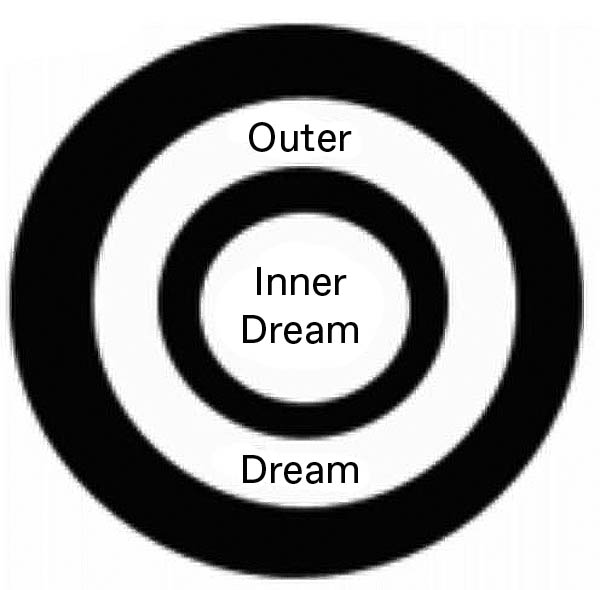
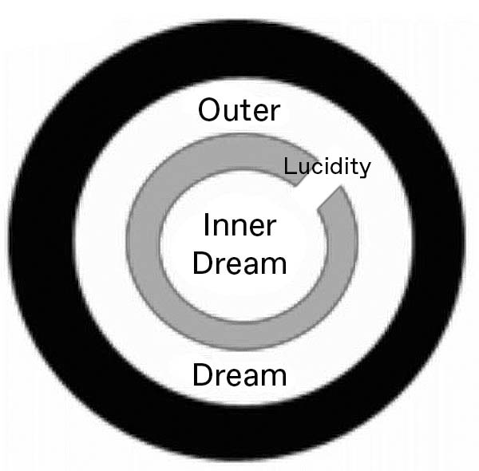
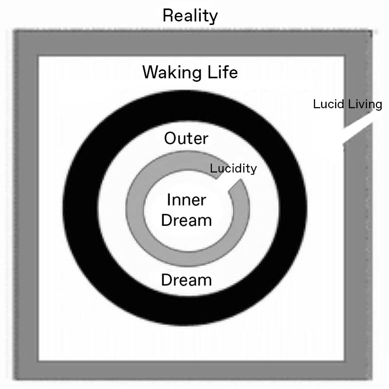

One of the most dramatic developments in dreamwork over the past 20 years has been the widespread acceptance of the phenomenon of lucid dreaming. Numerous books, papers, and at least one doctoral dissertation have been devoted to this subject, and some researchers have developed technological devices designed to enhance lucidity. It seems obvious that all of this interest is about something which happens to some of us, some of the time, when we dream. It also seems clear that concentration upon lucidity, and the freedom of action it affords within dreaming, has a self-generating aspect: the more one practices, the more frequent and the more vivid lucid dreams may become.
I do not wish to dispute any of these findings. I myself have had a number of classic lucid dreams and I have enjoyed them, though I have not sought them out deliberately. What I am going to suggest in this brief article is that we ought to consider this subject more circumspectly, and avoid what Jeremy Taylor calls the trap of "misplaced literalism." I am going to suggest an alternative explanation of lucidity which-while not denying the experience-places it in a somewhat different context. I want to make it clear that this alternative explanation arises out of my own dreaming. I put it forth more in the form of an hypothesis than as a fully formulated theory, and I welcome comments.
My suggestion is that lucid dreams (or, at least, some lucid dreams) are a special case of 'nested' dreams: dreams which are stacked one inside the other like Russian dolls, and in which the dreamer becomes aware of the inner dream within the outer dream. There may be no limit to the number of levels of nesting that can exist. I do not know how common nested dreams are for others, but I have recorded a total of 122 dreams over the past 11 years in which I either recall a preceding dream or dreams of the same night, or I am recording such a dream in my dream journal. Another 28 dreams relate back to dreams I recall from previous nights. Here is a typical example of a pair of nested dreams:
Lucid Dream #1, 4/11/1996
I'm at an organizational meeting in an empty hall. There is a long table in the center and various power tools around. I am not presiding; I arrive after the meeting has begun and take a seat at the far corner of the table. An old colleague is talking about plans for our Museum. I realize that this is not right (since he is dead) but rather than interrupt him I pull on the sleeves of those sitting next to me and point to him. They don't seem to notice anything is wrong. Then an even older colleague starts to speak, reminiscing about the days when all he had to do for the organization was to pay his dues. Now I know that this is wrong, because I know that he died several years ago, and that I am dreaming. I announce this to the others, and tell them that to prove it I will now float to the ceiling and back again. I do this, but they are unimpressed. I try again to prove it by moving myself through a power saw. Finally, I decide to leave. At the glass door, I encounter a workman with a half-round file in his hand. I realize I could convince him if I really wanted to.
Then I wake up into:
Lucid Dream #2, 4/11/1996
I'm in bed, recounting the preceding lucid dream to my wife. I suspect that I am still dreaming, and to test this I shout "HI" several times. She puts her hand on my arm and tells me to stop shouting, that I'm awake.
But of course I wasn't!
The contents of these dreams are extremely variable, and I do not intend to discuss their meanings here, but the motif of nesting links them all. In most of them, the dreams to which they refer are ones I can remember having, sometimes ones which I got up in the middle of the night to record, but in a few cases my dream imagination has completely confabulated earlier dreams. And in some of them lucidity is a subject of discussion, or a motif within the dream rather than a direct experience. A simple example:
Lucidity Without Content, 6/4/1994
I dream that I am having several lucid dreams; as soon as I become aware that I am dreaming I awaken each time into the frame dream.
This has suggested to me the following idea: that lucid dreams are nested dreams in which there is leakage between the levels. In other words, in a lucid dream, the dreamer in the outer dream becomes aware that the inner dream is a dream, while the inner dream is still going on.

This was brought home to me by a recent dream, on the morning of the actual events which the dream describes. A friend named Patricia (not Patti Garfield!) had e-mailed me the night before with information on this,
including a link to the International Space Station website, which I checked. I was planning to get up and watch the light show, but this dream happened instead:
The Leonid Meteor Shower, 11/19/2002
I awaken in bed and with some difficulty raise myself to check the digital clock. It reads 5:30. Just in time to catch the Leonid meteor shower. I consider not getting up, staying in bed - dreams are so much more interesting! - but I rouse myself and my wife and we get dressed in warm clothing and go outside. She asks me which direction we should look and I say north. We go to the end of our driveway where there is a gap in the trees where we can look to the north. Immediately we begin to see a spectacular light show! Golden meteors streak across the sky, every 10 seconds or so. We also see the Skylab satellite passing overhead, very low - only a few hundred feet; the light reflects off its white enamel solar panels. It is clearly about to crash, but fortunately it misses our house and the one next door. A young couple, who are servants, come out to join us. From their comments I come to the conclusion that I am dreaming. I awaken in bed and with more difficulty than before I raise myself to check the digital clock. It reads 5:35. Still in time to catch the Leonid meteor shower.
I consider not getting up, staying in bed - my last dream was so vivid! - but I rouse myself and my wife and we get dressed in warm clothing and go outside. This time there are fewer meteors than before, and they are less spectacular. A middle-aged English couple come out to join us. $>$ From their comments I come to the conclusion that I am dreaming. I awaken in bed and with even more difficulty than before I raise myself to check the digital clock. It reads 6:40. Too late to catch the Leonid meteor shower - it is already light outside. I go to a renovated barn where an inventor has devised a mechanism for stimulating lucid dreams. I am reminded of Stephen LaBerge's device. Patricia Garfield is also there, and we face the inventor, a young man, across a wooden table. I state my position on lucid dreams. I say that I have certainly had and enjoyed spontaneous lucid dreams - for example, my two dreams about the Leonid meteor shower! But I don't think it's right to try to induce them. The other two respect my views, even if they don't agree with them.
My friend Patricia later informed me that I had the best view of the show! This is a triple-nested dream which ends up discussing lucid dreaming, and accurately presenting my views about it. When I awoke from the outermost dream the clock actually said 6:40!
Here is another dream which illustrates the possibility that, in cases where lucidity occurs without the dreamer being aware of nesting, perhaps the exit from both levels to waking consciousness happened so swiftly that the dreamer was not aware of it.
Lucid Pop! 2/9/2001
My wife and I are visiting with her parents and some other family members in a house in Tennessee. We've been away from home for nearly 2 weeks and it is getting to be time that I want to go home. We are staying in the basement, which is unfinished, sleeping on blankets on a cement floor. Our dirty laundry is piled against a support column near the corner. We awaken and we're in our usual bed, but in my old room in my parents' house. We speculate that perhaps we're dreaming. But everything seems so real that I can't think of a way to prove this. I get up and go out into the hall. When I attempt to return to the bedroom, it is like swimming through molasses, everything is in slow motion. I say, "Now I know that I'm dreaming!" and pop out of both levels of the dream!
We might symbolize the situation I am describing like this:

In conclusion, one of the things which the Eastern dream teachings stress is that the goal is not to achieve the ability to dream lucidly, for the entire realm of waking world experience is considered neither more, nor less real than the dream state. Instead, they counsel us to undertake the more difficult discipline of lucid living. We might represent this state of lucid living in the following way:
